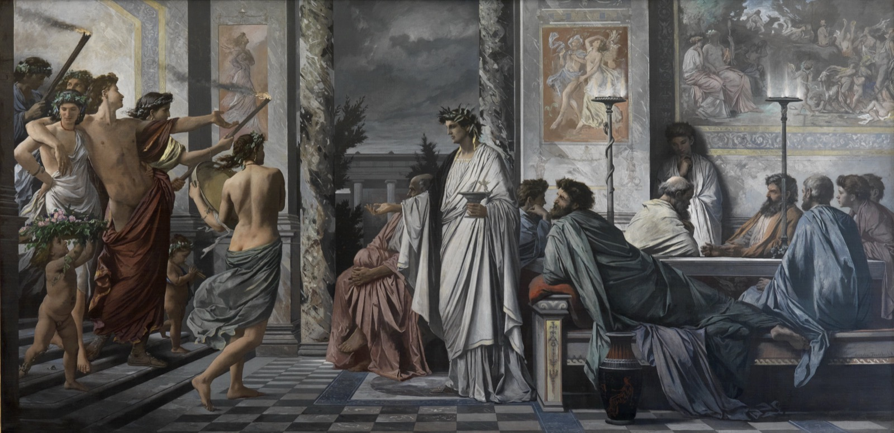
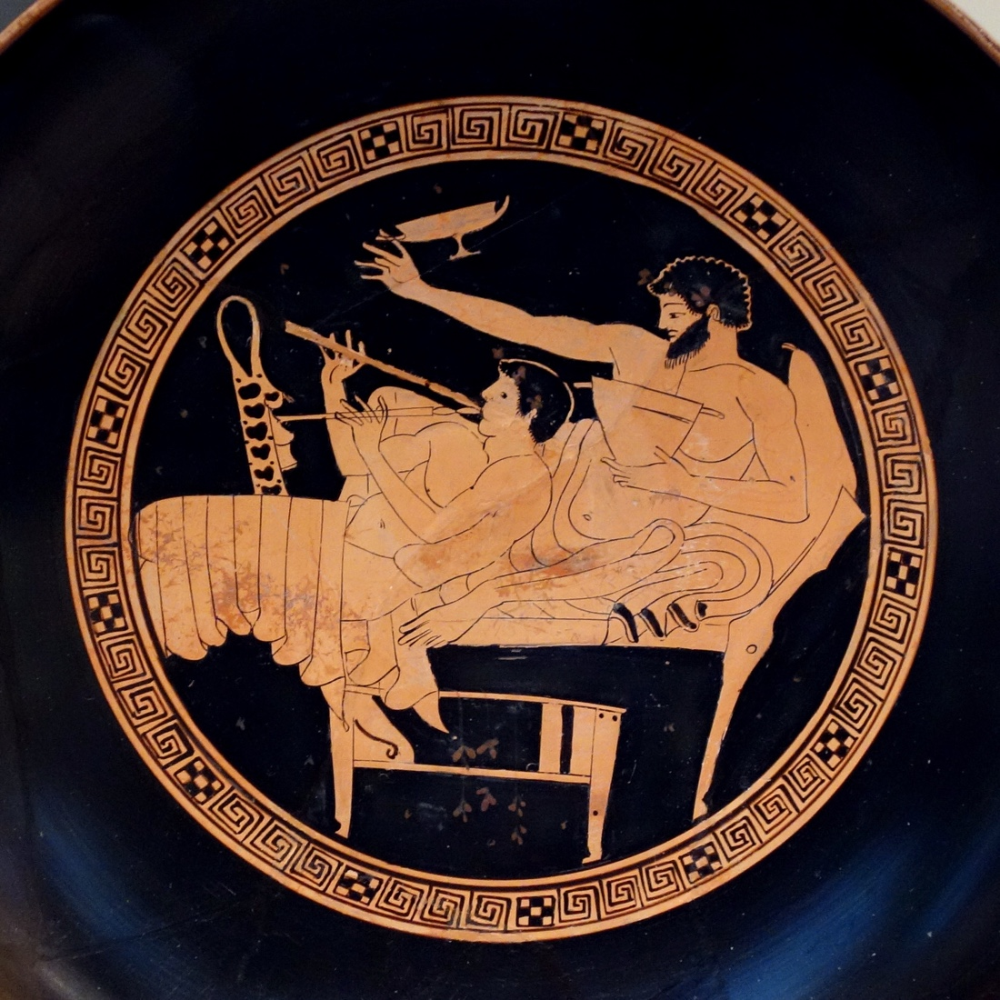

You have probably called something "Platonic love," and you probably meant a friendship with the sex left out. This is the book the phrase comes from, and that is close to the opposite of what it says.
The Symposium is a short dialogue Plato wrote around 380 BC, and it is a record (or an invention) of a dinner party from years earlier, in 416 BC, at the house of a playwright named Agathon. Agathon had just won the city's top prize for tragedy, the men are badly hungover from celebrating, and so when they gather the next night the doctor in the group suggests they go easy on the wine, send the hired flute-girl away, and entertain themselves a different way: each man, around the room, will give a speech in praise of Eros, the god of love and desire. Seven speeches follow. The point of the book is that they climb, from the crude to the sublime, one rung at a time, until the last speaker arrives at something that does not sound like a party trick at all.
Two warnings before the door opens. The first is that we get all of this thirdhand. The narrator, a man named Apollodorus, was a child when the party happened; he is repeating it years later to a friend, having heard it from someone who was actually there and checked a few details with Socrates. So this is a story, beautifully shaped, not a transcript. The second is that the love these men are mostly talking about is the Athenian kind: an older man and a younger one, the erastes and the eromenos. That convention is the water they swim in, and the speeches assume it the way we assume two people meet on an app. State it plainly and the book stops being strange.

The featured translation throughout is Benjamin Jowett's, the great Victorian version, which is out of copyright and is the one most people have actually read. Each stop gives you Jowett's words first, then unpacks them in plain language. On the handful of most famous lines, where the modern translators are worth hearing, you can open a panel and see Jowett against Nehamas and Woodruff (1989) and Christopher Gill (1999).
Stop 1 / The setup
A party with a rule
Jowett / Symposium 177d-e, Socrates speaking
"How can I oppose your motion, who profess to understand nothing but matters of love..."
A symposion was not a seminar. It was a drinking party: men reclining two to a couch, wine mixed with water in a big bowl, music, games, and fewer rules as the night wore on. This one opens the morning after Agathon's victory blowout, with everyone hungover, which is why the doctor, Eryximachus, talks them into speeches instead of another round. His pitch for the topic: Love is a great god, and strangely, nobody ever thinks to praise him. So tonight they will.
They agree, and they go around the couches in order. There is one small, perfect interruption. When it is the comic playwright Aristophanes' turn, he has the hiccups from eating too much and cannot speak, so he has to swap his place with the doctor while he holds his breath, gargles, and makes himself sneeze them away. Plato put a hiccup fit directly in front of one of the most beautiful speeches in the book. He is telling you, early, not to take the solemnity too straight.
Notice the line above, because it is doing quiet work. Socrates says the only thing he understands is ta erotika, matters of love. This is the man who built a career on claiming he knew nothing. Love is the single subject Plato ever lets him claim as his own, and the whole book is the cash-out of that claim.

Stop 2 / The lower rungs
Three warm-up speeches
Jowett / Symposium 180d-e, Pausanias speaking
"...if there were only one Aphrodite there would be only one Love; but as there are two goddesses there must be two Loves."
The first three speakers are the warm-up act, and they go by quickly, because Plato put the weak speeches first on purpose. Each one gets something a little less wrong than the last.
Phaedrus goes first and keeps it simple: Love is one of the oldest gods, and the best thing about him is that he makes you brave. Nobody wants to look like a coward in front of the person they love, so an army of lovers would be unbeatable. (Thebes actually tried this; their Sacred Band was a unit of paired lovers.) Pausanias goes next and adds the first real idea, the one in the panel above. There is not one Love but two, because there are two Aphrodites. There is a common, bodily love that just wants a body, and a heavenly love aimed at a person's mind and character, the kind that makes both people better. The crude and the fine are already pulling apart. Eryximachus, the doctor, then blows the idea up to cosmic size: love is not just a thing between people, it is the principle of balance in everything, in medicine, in music, in the weather, the pull that brings opposites into harmony.
None of this is wrong, exactly. It is just early. Each speaker has grabbed one true piece of love (it makes you brave, it comes in a high and a low form, it is a kind of harmony) and mistaken his piece for the whole. Then the comedian clears his throat.
Stop 3 / The famous myth
We were round, and we were cut in half
Jowett / Symposium 189e-190a, Aristophanes speaking
"The primeval man was round, his back and sides forming a circle; and he had four hands and four feet, one head with two faces, looking opposite ways, set on a round neck and precisely alike; also four ears, two privy members, and the remainder to correspond."
Aristophanes, the comic playwright, gives the speech everybody remembers, and it is a myth he makes up on the spot. Long ago, he says, people came in three sexes, not two: all-male, all-female, and a combined male-female. And every person was double, a single round body with four arms, four legs, two faces on one head, who could walk forwards or backwards or cartwheel along at high speed. They were strong and pleased with themselves, and they made a run at the gods.
Zeus could not just kill them, because then who would make offerings, so he cut each one in half, "as you might divide an egg with a hair," and had Apollo turn the faces around and tie off the loose skin at the navel. Each half, suddenly weak and alone, spent its days searching for its other half so it could wrap around it and be one thing again. They were dying of it, refusing to eat or do anything apart, until Zeus took pity and moved their private parts around to the front, so that two halves could at least find a little satisfaction in each other and then get back to their lives.
This is where "you complete me" comes from. The missing half, the soulmate, the one person you were split from at the start of the world: a comedian invented it at a drinking party twenty-four centuries ago, for a laugh, and it is still the most popular theory of love we have. Aristophanes' point is genuinely moving. Love is the name for how badly you want to stop being a half. It is the longing to be whole.
Hold onto it, because Plato is going to take it apart. He gave the most romantic idea in the book to the funny man, and a few speeches later he has Diotima quietly point out the problem: people do not actually love whatever is "theirs." You will let a doctor cut off your own hand if it turns gangrenous. What you love is not your other half. What you love is the good, even when the good is not the thing you started attached to. But that is the next room. For now the myth just sits there, perfect and a little sad, ending on the line in the panel.
One famous line, three ways
The sentence the whole speech is built to land on, at 192e to 193a. The translators agree on the idea and split on how personal to make it.
Jowett's "the whole" is grand and a little abstract. The moderns make it about you: "our desire to be complete." Same claim either way, that love is the ache to be one thing again instead of two.
Stop 4 / The turn
Socrates springs a trap
Jowett / Symposium 201a-b, Socrates and Agathon
"And if this is true, Love is the love of beauty and not of deformity? ... And the admission has been already made that Love is of something which a man wants and has not?"
Agathon, the host, gives the last of the regular speeches, and it is the prettiest and the emptiest. Love, he says, is the youngest and most beautiful of the gods, soft, delicate, the source of every good thing, and he says it in such polished, perfumed phrases that the room bursts into applause. Then Socrates, instead of giving a speech of his own, asks to ask Agathon a few questions, and over about a page the whole evening turns over.
The questions are simple, and that is the trap. Does Love have to be love of something? Yes. And does anyone want what he already has, or what he lacks? What he lacks; nobody who is already tall wishes to be tall. So put it together. Love is love of beauty. And you only love what you do not have. Therefore Love does not have beauty. The thing five straight speakers have been crowning as a beautiful god turns out, by its own definition, to be the one thing that is missing beauty and reaching for it.
This is the hinge of the book. Everyone built Love up; Socrates, with a few yes-or-no questions, shows that love is by its nature a lack. It is not the beautiful beloved sitting on the couch. It is the wanting that points at them. Whatever else gets said tonight has to start from there: love is need, not having.
Stop 5 / What love is
The child of Poverty and Resource
Jowett / Symposium 203b-c, Diotima's story (as Socrates relays it)
"On the birthday of Aphrodite there was a feast of the gods, at which the god Poros or Plenty, who is the son of Metis or Discretion, was one of the guests. When the feast was over, Penia or Poverty, as the manner is on such occasions, came about the doors to beg ... and accordingly she lay down at his side and conceived Love..."
Now Socrates does something odd. He says he did not work any of this out himself. He learned it, when he was young, from a woman: Diotima, a priestess from Mantinea, who taught him about love and once, he says, postponed a plague. Pause on her for a second. The highest teaching on love in the Western canon is put in the mouth of a woman who almost certainly never existed; most scholars read Diotima as Plato's invention. A man, writing another man, who quotes a woman who is not real, at a party full of men, to deliver the truth about desire. Plato knew exactly what he was doing; he just won't tell you what.
Diotima explains where Love came from with a story. At the feast for Aphrodite's birth, a god named Poros, whose name means Resource, or a way through, got drunk on nectar and passed out in the garden. Penia, whose name means Poverty, was outside begging, as she always is, and seeing her chance she lay down beside him and conceived a child. The child was Eros, Love, and he takes after both parents, which is the entire point.
From his mother he is poor: barefoot, homeless, sleeping in doorways and on the bare ground, always in want. From his father he is a schemer: bold, tough, a hunter, forever plotting to get his hands on the beautiful things he lacks. So Love is not the pampered, beautiful god Agathon described. Love is a barefoot operator on the make. And he sits, permanently, in the gap between not having and having, which is also the gap between ignorance and wisdom. The truly wise do not love wisdom; they already have it. The truly ignorant do not either; they don't know they're missing it. Only the in-between creature, who knows he lacks something good and goes hunting for it, loves it. The Greek for that creature is philosophos, lover of wisdom. Diotima's quiet bombshell: love and philosophy are the same motion. Both are wanting what you don't have badly enough to chase it.
What Love is made of, two ways
Diotima's portrait of Love at 203c to 203d, the barefoot schemer. Jowett's Victorian diction against the modern Hackett version.
"A mighty hunter, always weaving some intrigue" (Jowett), "an awesome hunter, always weaving snares" (the moderns). Either way, not a chubby cherub with a bow. Love is a hungry predator, because love is lack on the prowl.
Stop 6 / The climb
The ladder to Beauty itself
Jowett / Symposium 211b-c, Diotima's ladder
"...to begin from the beauties of earth and mount upwards for the sake of that other beauty, using these as steps only, and from one going on to two, and from two to all fair forms, and from fair forms to fair practices, and from fair practices to fair notions, until from fair notions he arrives at the notion of absolute beauty..."
Here is what "Platonic love" actually means, and it is a staircase. Diotima lays out the climb step by step. You start where everyone starts, by falling for one beautiful body. Fine, she says, but notice something while you are there: the beauty in that body is the same beauty that is in every other beautiful body. Once you really see that, you start to love beautiful bodies as a kind, and your grip on the one particular body loosens.
Then you climb. You notice a beautiful mind is worth more than a beautiful face, and you start caring more about who a person is than how they look. From there you rise to the beauty in laws and customs, the way a well-run society is beautiful; then to the beauty in knowledge, in whole fields of understanding; until you reach what Diotima calls a great sea of beauty, and finally the thing every step was a shadow of. She calls it beauty absolute, separate, simple, and everlasting. Not a beautiful body or a beautiful law or a beautiful idea: Beauty itself, the source all of those borrow from and then lose, that never changes and never dies. (Readers of the other Plato post will recognize this. It is the daylight outside the cave, told in the language of love.)
That climb is the ladder of love, and it is the real meaning of the phrase. Not a relationship with the desire switched off. A desire kept fully on and aimed upward: the same wanting that starts at a particular face, followed honestly until it walks you off the face entirely and into the love of something perfect. The sex isn't denied. It is the first rung.
And there is a bill. The higher you climb, the less the particular person matters, because you have learned to find their beauty everywhere and then past everyone. The philosopher Gregory Vlastos pressed exactly this, in a famous 1973 essay: Plato teaches us to love the beautiful qualities in a person, not the person, so people become interchangeable, rungs you are meant to step off. You do not get long to sit with the objection. It is about to walk through the door, very drunk, with its name on it.
Steps, or stairs? The climb in two translators
The ladder image itself, at 211c. Watch how literal each translator makes the staircase.
Jowett climbs through abstractions ("fair forms... fair practices... fair notions"). The moderns keep it physical, "from one body to two," which is closer to the Greek and makes the staircase you can actually feel under your feet: it starts on a body and ends nowhere near one.
Stop 7 / The drunk at the door
Alcibiades praises the man who turned him down
Jowett / Symposium 219c-d, Alcibiades speaking
"...he was so superior to my solicitations, so contemptuous and derisive and disdainful of my beauty ... in the morning when I awoke ... I arose as from the couch of a father or an elder brother."
The door bangs open. Alcibiades, falling-down drunk, crowned with ivy and violets, leaning on a flute-girl, the most beautiful and most dangerous man in Athens, pours into the room. He is told the rule, give a speech about Love, and refuses. He will praise Socrates instead, and he will tell the truth, because he is too drunk to manage anything else.
What follows is the only speech that is not about Love the god. It is about loving one specific, infuriating person, and it is a confession. Socrates, Alcibiades says, is like those little carved figures of Silenus you see in shops, ugly and comic on the outside, that "open in the middle, and have images of gods inside them." He is the one person alive who can make Alcibiades feel ashamed of himself. And then, in front of everyone, Alcibiades tells the story of how he tried to seduce him.
He was young, gorgeous, and used to getting whatever he wanted, and what he wanted was Socrates' wisdom, so he offered the obvious deal: his looks for the older man's mind. He arranged the private dinners, the late training sessions, and finally got Socrates under a single cloak for an entire night. And nothing happened. Socrates lay beside the most desired body in Athens, treated it (in Alcibiades' own bitter words) with contempt, and went to sleep. Alcibiades got up, he says, as if he had spent the night with his father.
Read it right after the ladder and it cuts two ways at once. One: here is the ladder vindicated. Socrates has climbed so high that the one body half of Athens was in love with, laid in his bed on purpose, is just a rung he passed long ago; he is not being heroic, he is simply no longer interested in the bottom step. Two: here is the ladder's bill arriving. Alcibiades does not love Beauty itself. He loves Socrates, this exact maddening man, and it has half-destroyed him, and from where he is lying Socrates' great serenity looks an awful lot like indifference to an actual human being. Plato puts the strongest objection to his own theory in the mouth of a drunk, lets it land, and then lets the drunk pass out.
The morning after, two ways
The most quietly devastating line in the speech, at 219c to 219d: the beautiful man explaining that he got nowhere.
Jowett leans on the insult ("derisive and disdainful of my beauty"). The moderns make it flat and almost comic ("went no further than..."). Both land the same humiliation: in this story it is the irresistible one who gets turned down.
Stop 8 / What it leaves you
What "Platonic love" really means
Jowett / Symposium 212a, the reward at the top of the ladder
"...beholding beauty with the eye of the mind, he will be enabled to bring forth, not images of beauty, but realities ... and bringing forth and nourishing true virtue to become the friend of God and be immortal, if mortal man may."
So put the misunderstanding to bed. "Platonic love" does not even come from Plato; a Renaissance scholar named Marsilio Ficino coined the phrase more than eighteen hundred years later, reading this book. And it does not mean a warm friendship with the desire turned off. It means desire kept on and aimed up: the same wanting that begins at a beautiful face, followed all the way to the love of what is beautiful and good and permanent in everything. The chaste, sexless meaning is a cooler thing later English speakers did to the word. Plato's version is hotter and far more demanding. It asks you to want, and then to keep wanting, past every single particular thing you wanted.
Whether that is the highest picture of love or a quietly heartless one is the argument the book refuses to settle, and Plato built the argument into the furniture. Diotima hands you the ladder, perfect and rising. Alcibiades, fifteen minutes later, hands you a wrecked man weeping over one person who climbed straight past him. The book gives you both and declines to choose. That is not a failure of the book. It is the book.
And it really does just walk off. The party falls apart, fresh revelers crash in, everyone drinks too much, people drift home. Toward dawn only three men are still awake, and Socrates is patiently wearing the other two down into agreeing that the same writer ought to be able to compose both comedy and tragedy, which is a strange and perfect last note, given that one of the two is a comedian and the other a tragedian, and given that the book you just read is plainly both. Then they nod off. Socrates gets up, washes, and spends the rest of the day exactly as usual, because for him a night like this is just a day.
One last thing, the kind the first Athenian readers would have felt in their chests. The party is set in 416 BC, the high-water mark, with Athens rich and sure of itself. Within a year, Alcibiades, the beautiful drunk at the door, would talk the city into a catastrophic invasion of Sicily, be accused of mutilating the sacred statues, defect to Sparta, and become the most spectacular traitor in Greek history; Athens would lose the war and never fully recover. Plato wrote all this down decades after, knowing every bit of what came next. He set the most beautiful conversation about love on the last good night, and let the man who would help end the city kick the door in. The original readers felt the whole grim future sitting in that bright room. We mostly just get the love, which may be the better deal.
Where the text comes from
Every quotation is verbatim. The featured walk is Benjamin Jowett's translation (3rd edition, 1892), which is in the public domain and is the version most readers have met; it is quoted from the Project Gutenberg text. The comparison panels add the two standard modern translations, Alexander Nehamas and Paul Woodruff (Hackett, 1989, also in the Cooper Complete Works) and Christopher Gill (Penguin Classics, 1999), on the handful of lines where hearing them is worth it. Every translator is named and every line is located by its Stephanus number (the standard page reference, like 192e, that is the same in every edition).
- The walk is Jowett throughout: the setup (177d, 180d), Aristophanes' myth (189e to 193a), Socrates' turn on Agathon (201a), Diotima on the birth and nature of Love (203b to 203d) and the ladder (211b to 212a), and Alcibiades (215a, 219c).
- The panels stack Jowett against Nehamas and Woodruff and, on Aristophanes' line, Gill. The modern translations are still in copyright and appear here in short excerpts, for comparison and study, with each translator named.
- On the history and the readings, the background draws on the Stanford Encyclopedia of Philosophy (on Plato's ethics of love and friendship), the Internet Encyclopedia of Philosophy, and the Greek text on Perseus. The objection in stop 6 is Gregory Vlastos, "The Individual as Object of Love in Plato," in his Platonic Studies (Princeton, 1973).
Four honest notes. Diotima (stop 5) is most likely a character Plato invented; she appears in no independent source, and the wisest words in the dialogue are deliberately put at two removes from him, in a woman's voice inside Socrates' memory. The frame is thirdhand and set about fifteen years after the party, so its polish is Plato's, not a recording. "Platonic love" is Ficino's Renaissance phrase, not Plato's, and the sexless modern sense drifts from what the ladder actually describes. And the love assumed by most of the speeches is the Athenian convention between an older and a younger man, stated here plainly rather than smoothed over or pretended away.
The breakdowns are mine.
The painting in the opening and on the card is Anselm Feuerbach's Das Gastmahl des Plato (Plato's Symposium), first version, 1869, oil on canvas, in the Staatliche Kunsthalle Karlsruhe, public domain. The drinking cup is an Attic red-figure kylix with a symposium scene, around 480 BC, in the Museum of Fine Arts, Boston (01.8034); photograph by Mark Landon, used under CC BY 4.0.